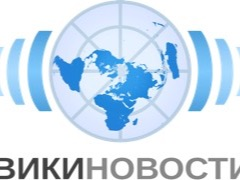
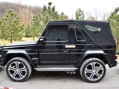

В сентябре 2015 года московская полиция задержала бронированный Mercedes Gelandewagen стоимостью около €500 000, ранее принадлежавший экс-президенту Украины Виктору Януковичу. Автомобиль был разыскан через Интерпол по запросу Генпрокуратуры Украины. Нынешний владелец Александр Симонов не мог получить машину обратно из-за заморозки механизма взаимной правовой помощи между Россией и Украиной.
В сентябре 2015 года сотрудники московского ОМВД «Марьино» задержали бронированный внедорожник Mercedes G500 стоимостью около полумиллиона евро, некогда принадлежавший экс-президенту Украины Виктору Януковичу. По данным украинской Генпрокуратуры, автомобиль был передан в розыск через Интерпол в рамках уголовных расследований активов беглого политика.
После бегства Януковича в Россию в 2014 году машина неоднократно меняла владельцев. Последним собственником стал Александр Симонов, не подозревавший о розыске автомобиля: машину изъяли при попытке продажи. Следствие установило, что транспортное средство хранится на парковке ОМВД с конфискованными номерными знаками, ключами и документами.
Украинская сторона чуть ли не ежедневно обзванивала подразделение по обычной проводной линии, выясняя судьбу джипа. Юридическую коллизию создал факт: 25 августа 2015 года Кабинет министров Украины денонсировал соглашение о взаимной правовой помощи с Россией, тем самым заморозив официальный механизм передачи автомобиля.
Адвокат Симонова настаивал, что автомобиль никому не причинил вреда, и обжаловал изъятие. Суд был назначен на 16 сентября 2015 года. Ситуация обнажила правовую пустоту: ни вернуть машину украинской стороне (нет договора), ни законно удерживать её российские правоохранители толком не могли.
Дело стало показательным примером того, как санкционные и процессуальные механизмы оказываются парализованы в условиях политического конфликта между государствами, а гражданин — заложником чужого имущественного спора.
Источники
-

Wikinews В Москве задержан Mercedes Gelandewagen, принадлежавший бывшему президенту Януковичу - L Life.ru Полиция Украины пытается забрать из Москвы джип сына Януковича
- BFM.ru Приключения джипа Януковича в Марьино
-

Point.md В Москве задержан Mercedes Gelandewagen, принадлежавший Януковичу - A Antikor.ua Украинская полиция пытается забрать из Москвы Mercedes-G500 сына Януковича